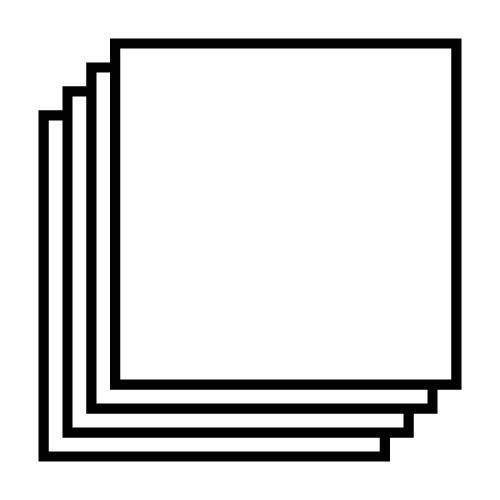

Image web — picsum.photos
Aperçu de la photo…
Photos libres de droits (picsum.photos, licence Picsum). Une fois ajoutée, elle devient une pièce jointe que l'IA pourra intégrer.

Préférences
Créez vos maquettes SuperPrint par conversation, puis ouvrez-les directement dans SuperPrint.